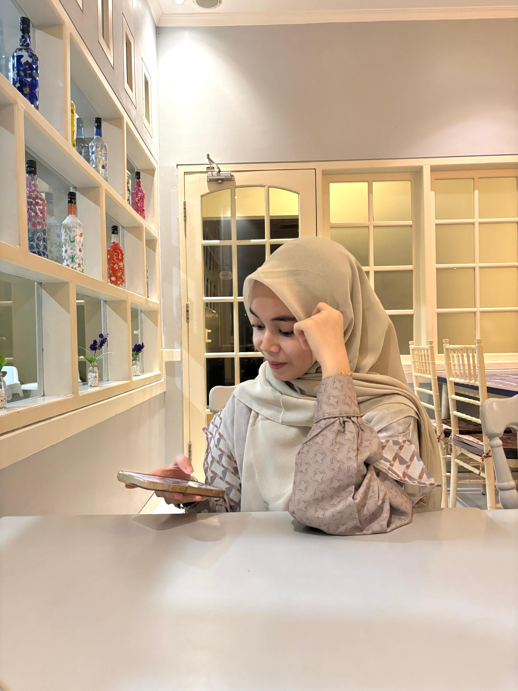

🎓 Mahasiswa Teknik Informatika
Saya Nailul Muna, mahasiswa Teknik Informatika semester 5 di Universitas Jabal Ghafur (UNIGHA), Sigli, Aceh. Saya memiliki ketertarikan pada Web Development, khususnya Frontend Development dan UI/UX Design.
Selama perkuliahan, saya aktif mengerjakan berbagai proyek pengembangan perangkat lunak, baik secara individu maupun dalam tim. Melalui berbagai proyek tersebut, saya terus mengembangkan kemampuan dalam mengubah ide dan kebutuhan pengguna menjadi website yang fungsional, responsif, dan mudah digunakan.
Saya memiliki pengalaman menggunakan beberapa teknologi seperti HTML, CSS, JavaScript, PHP, MySQL, Bootstrap, dan Python. Saya juga tertarik untuk terus memperdalam kemampuan dalam desain antarmuka dan pengembangan website modern.
Bagi saya, website yang baik bukan hanya tentang bagaimana kode ditulis, tetapi juga tentang bagaimana sebuah produk dapat memberikan pengalaman yang nyaman dan solusi yang bermanfaat bagi penggunanya.
"Menjadi seorang software engineer bukan hanya tentang menulis kode, tetapi tentang memahami masalah dan menciptakan solusi yang bermanfaat."
Ke depannya, saya ingin berkembang menjadi Frontend Developer profesional yang mampu membangun produk digital berkualitas, sekaligus terus meningkatkan kemampuan teknis, desain, dan kolaborasi dalam tim.